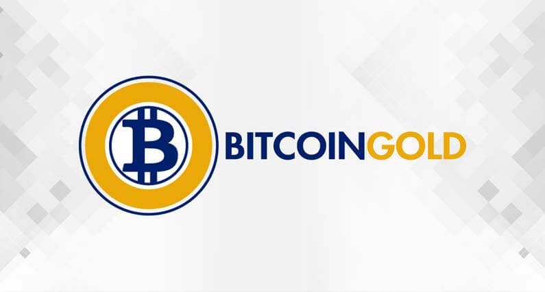
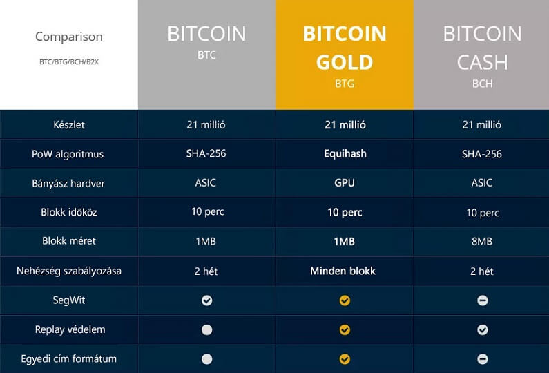

Mi az a Bitcoin Gold? Útmutató kezdőknek
Bitcoin Gold (BTG) egy olyan kísérlet, amely szeretné Bitcoin-t újra decentralizálttá tenni azáltal, hogy a bányászatot könnyebbé teszik a mindennapi emberek számára. Bitcoin célja, hogy egy decentralizált valuta legyen, amelyet a felhasználók irányítanak egy központi kormány helyett. Kezdetben Bitcoin bányászat nagyon könnyű volt, ezért bárki bányászhatott a világon akár otthonról is. Azonban idővel speciális bányász gépekkel rendelkező emberek összeálltak csoportokba ami így sok embernek nem tűnik túl decentralizáltnak, ezért jött létre Bitcoin Gold.
Mi az a Bitcoin Gold?
Bitcoin Gold, Bitcoin blokklánc egy leágazása amely 2017. október 25-én jött létre. Bitcoin Gold bányászok egy új Proof of Work algoritmussal állítanak elő blokkokat. Az eredeti Bitcoin blokklánc zavartalanul folytatja útját, de ebből az eredeti blokkláncból egy új blokklánc jött létre. Az új blokkláncnak ugyanaz a tranzakció története, mint a fő Bitcoin blokkláncnak egészen a leágazás pillanatáig. Ekkor egy teljesen új kriptovaluta született meg, a Bitcoin Gold.
Hogyan vált Bitcoin bányászat centralizálttá?
Bitcoin hálózat központja a blokklánc, a megosztott főkönyv amely nyilván tart minden tranzakciót. Körülbelül minden 10. percben egy számítógép a Bitcoin hálózaton hozzáad egy blokkot a blokklánchoz és begyűjti a 12,5 BTC blokk jutalmat. A bányászok versenyeznek a blokk hozzáadás lehetőségéért egy bonyolult matematikai feladat megoldásával.
Gyakorlatban ez azt jelenti, hogy egy hálózati csomópont befolyása a hálózaton arányos a számítógépes teljesítményével. Bitcoin kezdeti éveiben ez demokratikus módon működött. Csaknem mindenkinek, volt felesleges számítógépes teljesítménye amelyet bányászásra tudott használni.
De ez megváltozott amikor elkezdtek speciális Bitcoin bányászatra fejlesztett ASIC számítógépeket építeni. Ezek a gépek olyan sebességgel voltak képesek SHA-256 hash-eket számolni, hogy egy hagyományos PC-vel bányászók alig tudták fedezni az elektromos áram felhasználásukat. Bitcoin bányászat csak ASIC gépekkel lehetséges olyan helyeken ahol nagyon alacsonyak az elektromos áram árak.
Mi Bitcoin Gold célja?
Bitcoin Gold célja, hogy a bányászat újra decentralizált legyen. Satoshi Nakamoto idealista jövőképe 'egy CPU, egy szavazat' helyébe a realista világkép lépett ahol a bányász teljesítmény nagy része több nagy csoporthoz tartozik. Bitcoin hash számításának algoritmusát megváltoztatva SHA-256-ról Equihash-re, az összes SHA-256 bányász felszerelés haszontalan lesz a Bitcoin Gold bányászathoz. Ezáltal Bitcoin Gold lehetőséget kínál számtalan új embernek a bányászatra széles körben elérhető fogyasztói hardverrel. Egy jobban decentralizált és demokratikusabb infrastruktúra sokkal rugalmasabb és jobban alkalmazkodik Satoshi jövőképéhez.
Bitcoin Gold elosztása?
Bitcoin Gold kezdeti elosztása, pontosan ugyanaz mint Bitcoin Cash-é. Minden Bitcoin tulajdonos aki birtokol BTC-t a leágazás pillanatában 1:1 arányban kap Bitcoin Gold-ot.
Bitcoin Gold versenytársa Bitcoin-nak?
Annak ellenére, hogy Bitcoin az eredeti Bitcoin leágazása, nem igazán versenytársa Bitcoin-nak. Amíg más leágazások mint Bitcoin Cash, elvesznek néhány bányászt a Bitcoin hálózattól, hogy az új blokkláncon dolgozzanak, addig Bitcoin Gold ASIC ellenes algoritmusa azt jelenti, hogy egyik jelenlegi Bitcoin bányász sem fog átállni Bitcoin Gold-ra.
Ehelyett, Bitcoin Gold a többi ASIC ellenes kriptovalutával mint Ethereum fog versenyezni a bányász erőforrásokért. Ezeken a hálózatokon a bányászat kisebb GPU egységekkel történik. A probléma Bitcoin Gold számára, hogy a többi ASIC ellenes kriptovalutáknak nagyobb múltjuk van és sokkal kiszámíthatóbbak. Egyelőre nem világos, miért akarna egy bányász Bitcoin Gold-ra váltani, hacsak az ára nem szökik az egekbe.
Bitcoin Gold vásárlása és tárolása
Legegyszerűbb módja ha először Bitcoin-t vagy Ethereum-ot vásárolsz Coinbase vagy BitPanda-án. Ezután többek között Binance vagy Bitfinex segítségével cserélheted Bitcoin-t Bitcoin Gold-ra. Bitcoin vagy Ethereum beszerzése után Binance és Bitfinex oldalon részletes útmutatót találsz kriptopénz vásárlással kapcsolatban.
Bitcoin Gold tárcák letölthetők a hivatalos weboldalon. Valamint a Ledger Nano S szintúgy támogatja Bitcoin Gold-ot.
Záró gondolatok
Jelenleg semmi bizonyíték arra, hogy a Bitcoin bányászattal bármi probléma lenne. Nem ideális, hogy a rendszer ennyire centralizált, azonban a Bitcoin bányászoknak hatalmas vesztenivalójuk van, ha az erejüket szeretnék fitogtatni. Ugyancsak folyamatosan új bányászok szállnak versenybe amely segít a rendszer decentralizációján.
Az általános vélekedés a kriptopénz közösségben, hogy nincs elég újdonság Bitcoin Gold-ban ahhoz, hogy maradandót alkosson.